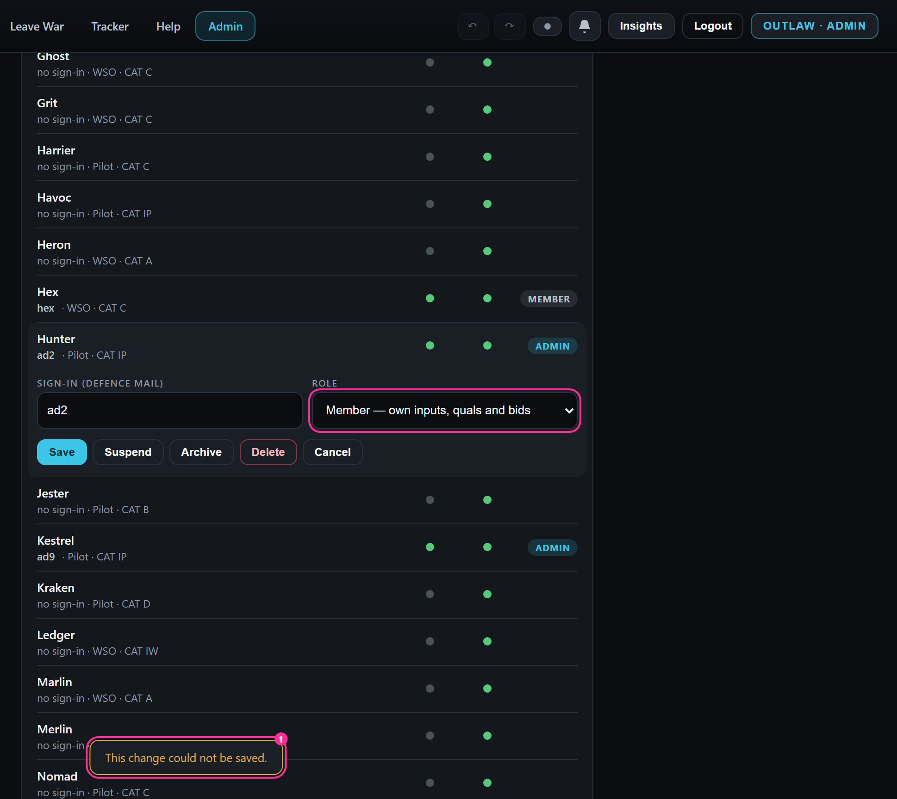
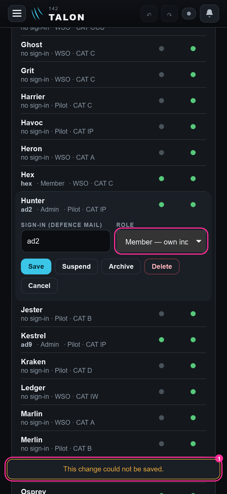
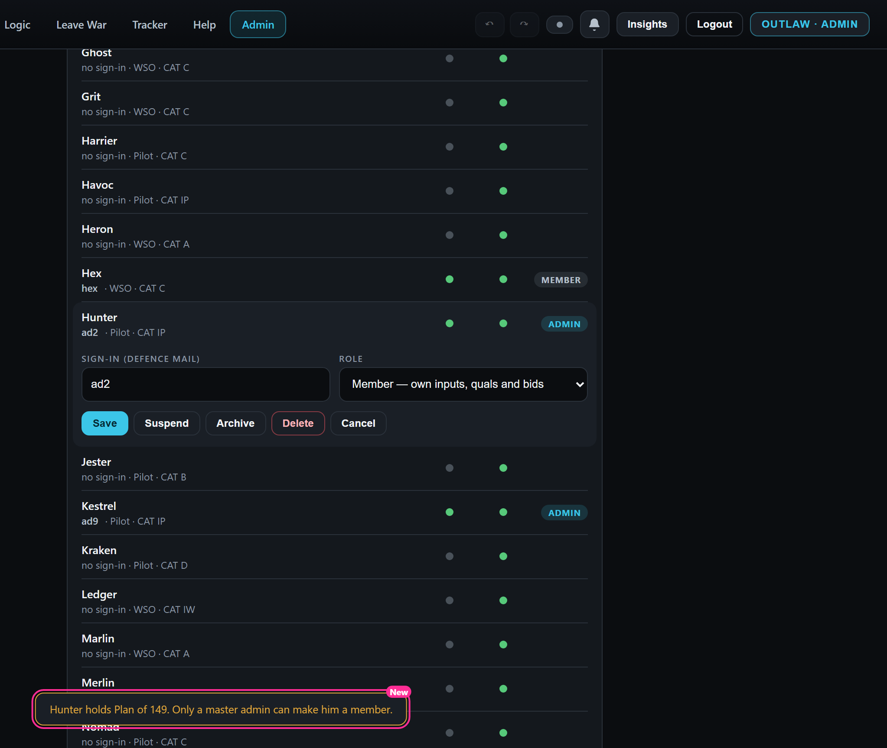
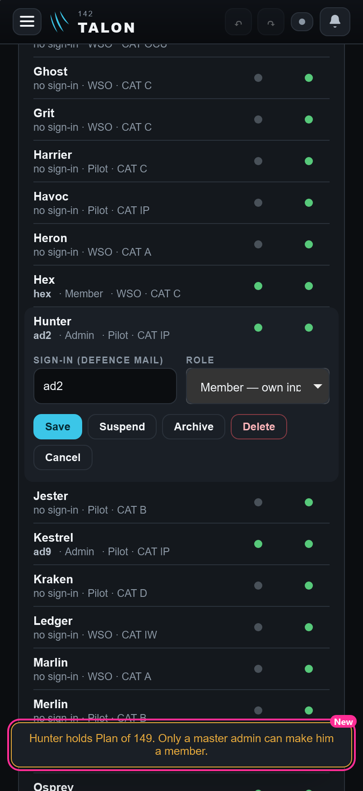
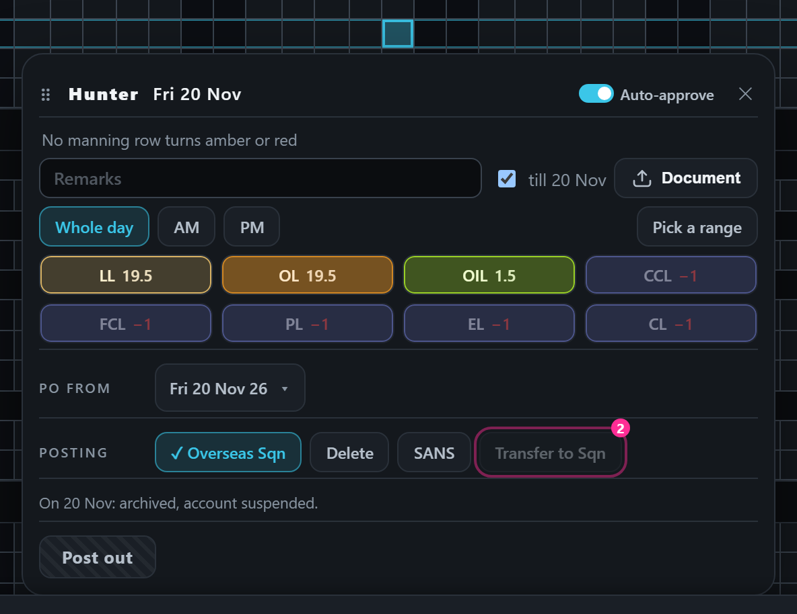
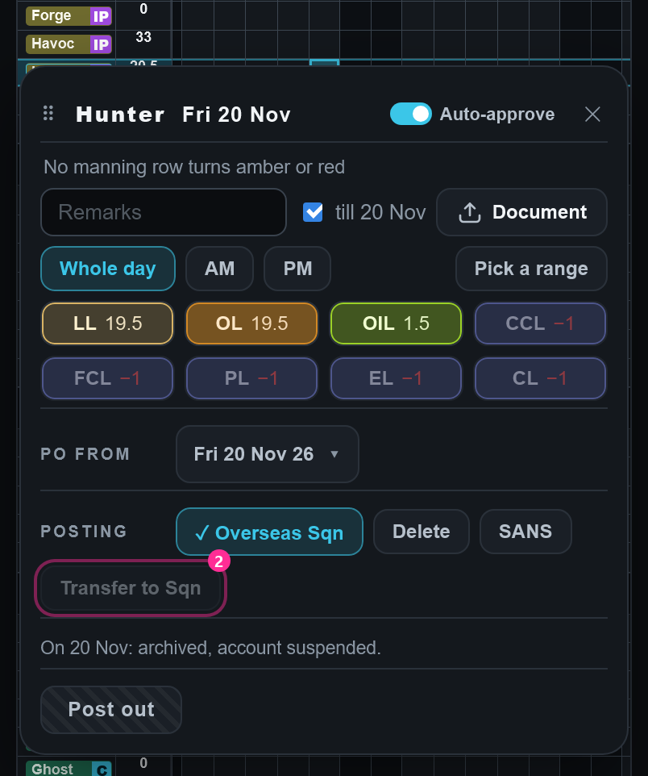
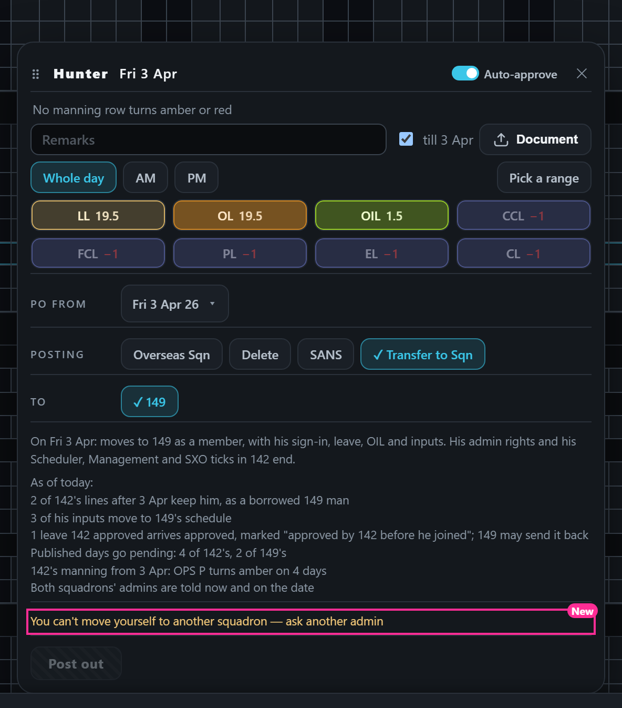
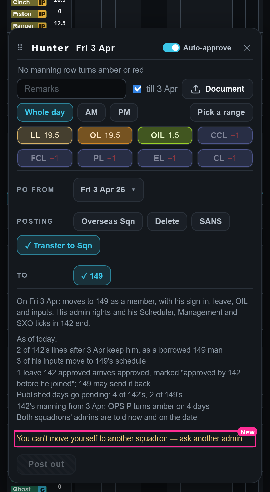
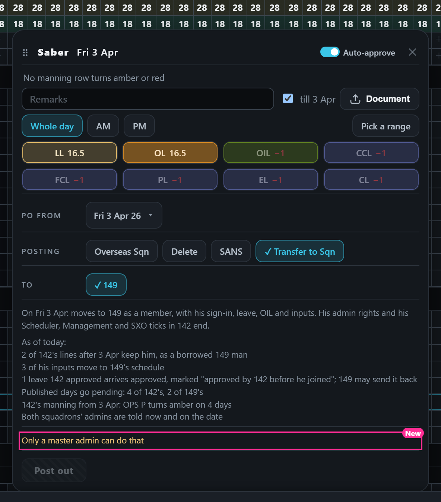
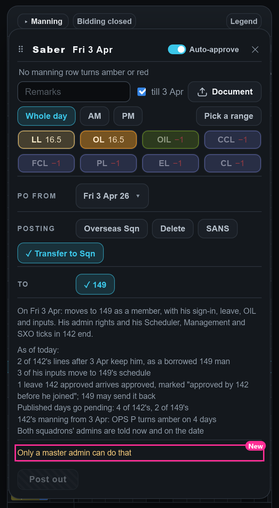

Two things the app already refuses still say only "This change could not be saved." Each needs words you can read first. The rules themselves are built; only the words are open. Real pictures are the app as it is today; anything drawn in is outlined in pink and tagged New. Tap a picture to see it full size. Big picture: a desktop. Small picture: your iPhone.
Answer by number. "Both as recommended" is fine. Until you answer, each refusal says "This change could not be saved."
Example. Hunter is 142's admin and holds Plan of 149, given by Saber, the master admin. On Wed 15 Jul Outlaw, another 142 admin who is not a master admin, opens Hunter's row on Admin → Users, picks Member and presses Save. Only a master admin can take Plan away, and making Hunter a member would end his Plan, so the app refuses. Today the note only says "This change could not be saved." (1a), which does not tell Outlaw why or who can do it.
Recommended: these words (1b). They say what stops it and who can do it.
Hunter holds Plan of 149. Only a master admin can make him a member.
When Saber, the master admin, does the same, it goes through: Hunter becomes a member, and his Plan of 149 ends with the change. I checked this in the running app.




Example. Hunter, 142's admin, opens his own Post out sheet, picks Transfer to Sqn and 149, from Fri 3 Apr. The app refuses: nobody moves himself, just as nobody can archive or delete himself. Then he opens Saber's sheet and does the same. The app refuses again: only a master admin moves a master admin.
No screen moves anyone yet: today Transfer to Sqn is greyed (2a). The rule is already built underneath, so when the transfer sheet you approved is built, these two refusals need words.
Recommended: for himself (2b), words that match the app's existing "You can't delete yourself — ask another admin":
You can't move yourself to another squadron — ask another admin
For the master admin (2c), the words the app already uses wherever an ordinary admin tries to change the master admin, so nothing new to learn:
Only a master admin can do that
Each shows above Post out, which goes grey, in the same look as the refusal you approved for a transfer that would leave 142 with no admin.






The words for "+ New squadron" when the first admin picked for it cannot be its admin wait until that screen is drawn.